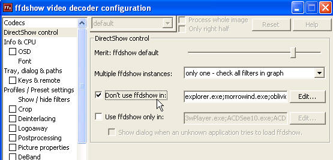

DirectX 簡單教學: 為何無法建立 ffdshow filter?
問題描述:
已經使用 regsvr32 ffdshow.ax 註冊已經成功, 為何在程式中不能建立 ffdshow filter? 也就是說, 為何當我們在建立 Filter Graph時, 程式執行到
CComPtr m_pVideoDeocder; // ffdshow Video Decoder
hr =AddFilterByCLSID(pBuilder, CLSID_FFDSHOW, _T("ffdshow Video Decoder"), &m_pVideoDeocder);
會傳回 E_NOINTERFACE 這樣的失敗訊息?
< sol >
主要是因為 ffdshow 有一個屬性, 會擋住某些執行檔進行 ffdshow 的建立, 若你的程式剛好在裡面, 那就會發生這個問題.
輸入指令
rundll32 ffdshow.ax,configure
你會發現, 問題就出現在下面

所以把他修正即可解決這個問題. (把你的程式拿掉或者把整個串列拿掉)